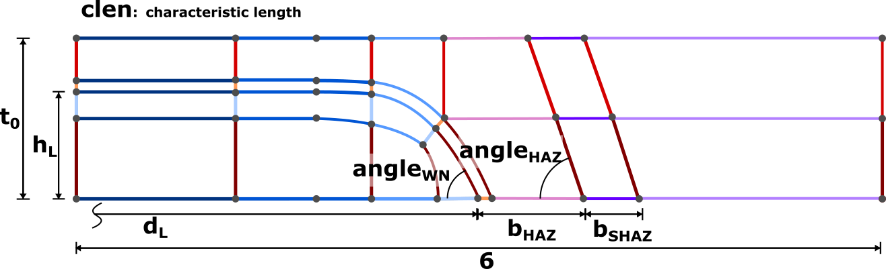

User Guide - Usage
Generate mesh
This is a guide on how to generate a mesh with specific geometric sizes.
Set parameters

You can set a certain number of parameters on the user interface:
flag_shaz: choose if a softened-heat affected zone is output in separate element set, if flag_shaz = 0, a width of clen will be displayedflag_halo: choose if a halo is constructed (width of halo will beclen)clen: characteristic length, i.e. size of element edge length, it also sets the width of the halot0: sheet thicknesshL: height of penetration of fusion zone into the sheetdL: spot weld diameterbHAZ: width of heat-affected zone (includes width of halo)bSHAZ: width of softened heat-affected zoneangle_wn: inclination of weld nugget in degrees (always >= 45°!)angle_haz: inclination of heat-affected zon in degrees
Set customize construction
The default settings lead to well constructed meshes in most cases.
For a more customized mesh you can also set parameters specific to the mesh construction in 10_parameters/02_custom_parameters.geo.
h1: set size of h1, important:h1 + h2 = hLh2: set size of h2, important:h1 + h2 = hLh3: set size of h3, which is the width of the halo, recommended to be 0.1 mm or less, ifflag_halo = 0then this parameter is ignored-
h4: set size of h4, important:h1 + h2 + h3 + h4 = t0 -
b1: set size of b1, important:b1 + b2 + b3 + b4= dL b2: set size of b2, important:b1 + b2 + b3 + b4= dLb3: set size of b2, important:b1 + b2 + b3 + b4= dLb4: set size of b2, important:b1 + b2 + b3 + b4= dLb5: set size of b5, which is the width of the halo, if the normal width is supposed to be equal to h3, it is recommended to useb5 = h3/Sin(angle_wn);b6: set size of b6, size of heat-affected zoneb7: set size of b7, size of softened heat-affected zone-
b8: set size of b8, control how much base material is modeled -
b200: set size of b200, is x-coordinate of Point 200, which is the center point of one of the arcs which creates the corner mesh at the tip of the spot weld b201: set size of b201, is x-coordinate of Point 201, which is the center point of one of the arcs which creates the corner mesh at the tip of the spot weldh201: set size of h201, is x-coordinate of Point 201, which is the center point of one of the arcs which creates the corner mesh at the tip of the spot weld, it controls the curvature of the arc at Point 7
The following parameters set the number of nodes / seeds on each line. Each parameter controls a number of lines. Refer to the diagram to see which lines use the same seeds (indicated by color). This ensures a structured mesh.
num_nodes_b1: set size of number of nodes b1, this is also the number of nodes at an eight of the circumferencenum_nodes_b2: set size of number of nodes b2num_nodes_b3: set size of number of nodes b3num_nodes_b4: set size of number of nodes b4num_nodes_b5: set size of number of nodes b5`num_nodes_b7: set size of number of nodes b7num_nodes_b8: set size of number of nodes b8
Export mesh
LS-Dyna
Ensure that Save group of elements is ticked, to output each material zone as a seperate element set. Parts will correspond to volume names, which are arbitrarily named in the code.
Abaqus
All material zones will automatically be output into separate element sets.